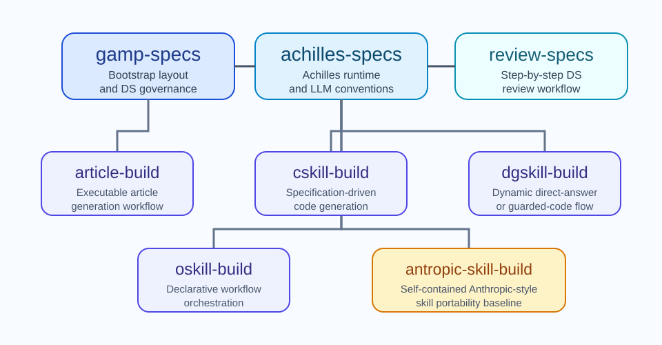

Repository Overview
AchillesCopilotBasicSkills Documentation
This repository provides the baseline self-contained skill catalog for Achilles-oriented projects. The catalog is intentionally split between repository bootstrap skills, runtime convention skills, and skill-family construction guides that can bootstrap further skill types without coupling the runtime to external project code.
Use the generated specification matrix when changing repository rules. The DS set is the authoritative layer, while the HTML pages explain how those rules map to the current codebase and its portable skill folders.

Repository Model
This repository is not a deployable production runtime. Its purpose is to hold portable skill folders, example code that lives inside those folders, documentation, and validation tests. In downstream projects, the expected usage model is to copy the relevant folders under a local skills/ directory, often ignored by Git, and use them there without depending on repository-level source modules from this repository.
Current Skill Catalog
| Skill | Role | Portable local code | Documentation |
|---|---|---|---|
gamp_specs |
Project bootstrap, agent guidance, DS policy, matrix generation, and HTML documentation structure. | examples/skillCatalog.mjs, docs scripts, specs loader asset, file size checker asset. |
Skill page |
achilles_specs |
AchillesAgentLib integration, runtime configuration, and LLM conventions. | examples/depsLoader.mjs, examples/runtimeConfig.mjs. |
Skill page |
article_build |
Self-contained article rebuilding, SVG validation, bibliography verification, and HTML emission. | Executable build modules and validators fully inside the skill folder. | Skill page |
cskill_build |
Specification-driven executable skill conventions. | Descriptor and DS guidance only. | Skill page |
dgskill_build |
Dynamic code generation skill conventions. | Descriptor and DS guidance only. | Skill page |
oskill_build |
Declarative orchestration skill conventions. | Descriptor and DS guidance only. | Skill page |
antropic_skill_build |
Portable Anthropic-style self-containment baseline. | Descriptor and DS guidance only. | Skill page |
Repository Conventions
No shared production src tree
This repository intentionally avoids a root src/ runtime. Example code is stored inside the relevant skill folders so copied skills remain self-contained in downstream projects.
Tests are validation artifacts
tests/<skill-name>/ validates example code and scripts in this repository. Those tests are not deployment artifacts for downstream projects.
Coding style authority
DS001-coding-style.md defines modularity, file-size guidance, line-length expectations, and the use of fileSizesCheck.sh.
Documentation and Validation Flow
The specification matrix is generated from DS frontmatter metadata rather than handwritten list items. Documentation work is expected to run npm run docs:matrix and npm run docs:verify-links, or the combined npm run docs:check, so that the matrix and the local HTML links stay synchronized with the actual files.